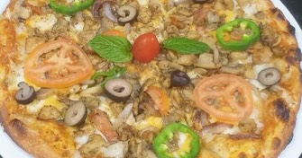
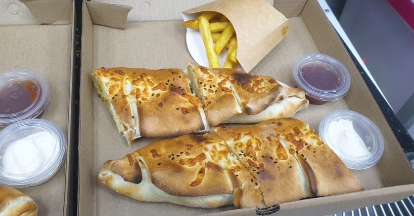

Pizza
Margherita Thon Quatre fromages Salami Escalope Champignon Double pte
partir de10DTjusqu' 15 DT
Pizzeria Turki, Grombalia
Des pizzas gnreuses, des sandwichs qui calent bien et le got du fait maison. Prpar chaud, livr chez vous.


Prpar avec envie Turki02 / La maison
Chez Pizzaria Turki, on prpare ce qu'on aime manger : une pte bien cuite, des garnitures gnreuses et des recettes qui font plaisir sans faire compliqu.
Vu sur Instagram
03 / table
Appelle-nous pour commander. Livraison domicile Turki, Grombalia, ou passe rcuprer ta commande.
52 235 956